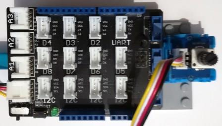

Version: 0.8.0
Grove RotaryAngleSensor is connected as followed on Netduino3:

| Grove RotaryAngleSensor | Mainboard with base shield |
|---|---|
| Yellow wire | Socket D5 |
using System.Diagnostics;
using System.Threading;
using Bauland.Grove;
using Bauland.Pins;
namespace TestRotaryAngleSensor
{
static class Program
{
static void Main()
{
// Grove RotaryAngleSensor module is connected on A0 of Netduino 3 with base shield
RotaryAngleSensor rotaryAngleSensor = new RotaryAngleSensor(Netduino3.AdcChannel.A0);
while (true)
{
Debug.WriteLine("Percentage: " + rotaryAngleSensor.GetPercentage().ToString("F") + "%");
Thread.Sleep(1000);
}
}
}
}